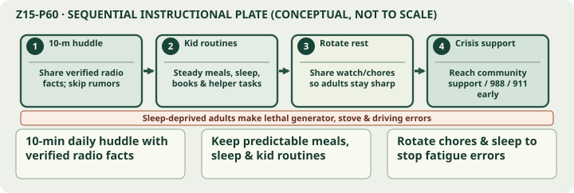

Z15-P60 · Disaster scenarios · New manuscript
Protect household morale, children's routines, and steady decision-making over 30 days
Prevent decision fatigue, sleep deprivation, and household conflict during stressful multi-week disruptions.
When it applies · Families, roommates, and isolated households enduring prolonged weather, outage, or recovery crises.
Equipment · Daily posted routine schedule, age-appropriate books/games/flashlights for children, regular meal/sleep times, and brief daily family huddle.

Actions
- Hold a calm 10-minute daily family huddle at a set morning or evening hour to share verified radio facts (avoiding nonstop rumor scrolling), review today's simple chores, check everyone's physical/emotional health, and make practical choices while everyone is rested.[D18, T11]
- Keep predictable daily anchors—consistent wake/meal/bedtimes, simple age-appropriate helper jobs for children, offline board games, books, journaling, and safe daytime outdoor walks when weather/air allow—routine calms children and cuts adult fatigue sharply.[D18]
- Rotate demanding watch duties (storm monitoring, stove/wood tending, caregiver shifts) fairly so no single adult collapses from 72 hours without sleep and makes dangerous safety mistakes (like mis-placing a generator or forgetting a valve).[D18, E11]
Failure recognition · One exhausted parent trying to manage every outage chore sleeplessly for four days straight while kids panic over unverified disaster rumors.[D18]
Verify · Confirm daily 10-minute fact-based huddle, shared chore/rest rotations, predictable child routines, and rumor-free official radio updates.[D18, U16]
Stop or change course · Severe emotional crisis, acute panic, or inability to sustain safe caretaking requires reaching out immediately to support networks, county crisis lines (988 in U.S. where reachable), or 911.[D18, T02]
Evidence and editorial notes
- D18 · FEMA / Ready.gov · Drought (current web edition)
- Section: Extended 30-Day Resilience, Supply Pacing, and Mutual Aid · Conditions: Multi-week regional disruption, supply-chain interruption, or prolonged utility recovery
Support: Manage 30-day household resilience through structured inventory tracking, conservative water/fuel/battery rationing, scheduled sanitation and hygiene routines, daily neighborhood wellness checks, and early transition to community distribution hubs before critical reserves run dry.
Limitations: Self-reliance plans must remain integrated with municipal/county relief and medical care—isolation without community check-ins increases mortality during prolonged disasters. · Conflicting evidence: None; frames 30-day scenarios realistically without doom-isolationism.
Editorial note: Anchors Z15 30-day operations, rationing logs, and community mutual-aid cards. · Specialist reviewer: Emergency management and community resilience
Primary source · checked 2026-11-24 - E11 · NPS · Hike Smart (current web edition)
- Section: Plan your hike; Stay together · Conditions: Groups on hiking routes
Support: Choose a route suited to the group's abilities and hike at a pace that keeps the group together.
Limitations: Fast hikers moving ahead at junctions is a leading driver of preventable separation. · Conflicting evidence: None; aligns with SAR prevention principles.
Editorial note: Core reference for group accountability and pacing cards. · Specialist reviewer: Group leaders and search and rescue
Primary source · checked 2026-11-24 - T02 · American Red Cross · First Aid Steps (current web edition)
- Section: First Aid Steps > Call 9-1-1 · Conditions: Lay emergency response to unresponsiveness, abnormal breathing or severe bleeding
Support: Activate EMS and get needed equipment. Follow dispatcher directions and act within training.
Limitations: Remote locations may delay EMS arrival, requiring sustained stabilization after activation. · Conflicting evidence: None; aligns with NPS-E.
Editorial note: Mandates early emergency activation and dispatcher adherence. · Specialist reviewer: EMS and wilderness medicine
Primary source · checked 2026-11-24 - T11 · FEMA / Ready.gov · Make a Plan (current web edition)
- Section: Make a Plan > Family Emergency Communication Plan · Conditions: Households and traveling groups preparing for disruptions
Support: Record out-of-area contacts, local meeting places, medical/allergy summaries, and alternate communication channels (text vs voice) in paper and offline formats; practice the plan periodically.
Limitations: Cellular networks often congest during disasters while SMS or out-of-area contacts may still connect. · Conflicting evidence: None; complements outdoor trip-plan cards.
Editorial note: Anchors emergency communication protocols and group contingency plans. · Specialist reviewer: Emergency management and communications
Primary source · checked 2026-11-24 - U16 · FEMA / Ready.gov · Emergency Alerts (current web edition)
- Section: Household Emergency Communications During Grid and Cell Outages · Conditions: Residential power, internet, and cellular tower disruptions
Support: Maintain a battery/crank NOAA Weather Radio, spare power banks, car-charger backups, written contact cards, and local AM/FM broadcast station lists so warnings and utility restoration updates remain accessible without Wi-Fi or cell data.
Limitations: Cordless landline handsets and VoIP routers fail immediately when house power drops unless separately backed up. · Conflicting evidence: None; links Z13 household comms to Z15 disaster alerts.
Editorial note: Grounds home communications continuity during extended blackouts. · Specialist reviewer: Emergency communications specialist
Primary source · checked 2026-11-24
Source lineage · FEMA Ready.gov Make a Plan and Coping; new manuscript · Classification · New manuscript.